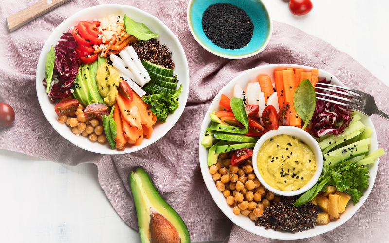
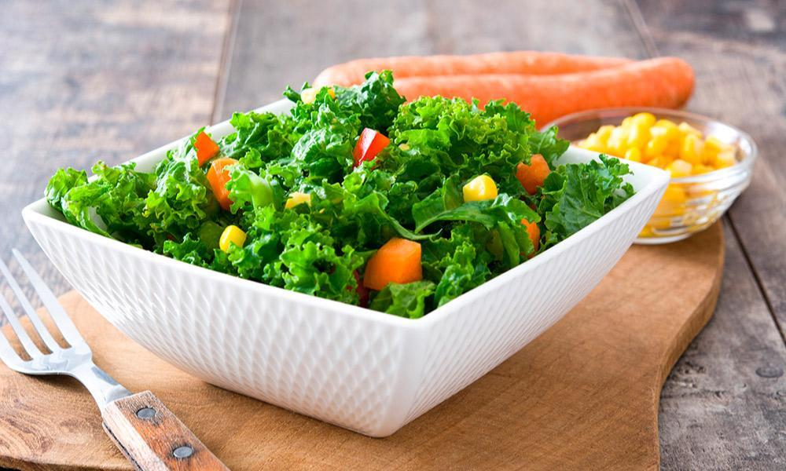

1-Tacos de garbanzos
Ingredientes:
- 1 lata de garbanzos cocidos
- 1 cucharadita de comino
- 1 cucharadita de pimentón
- 1 cucharadita de ajo en polvo
- 1 cucharada de aceite de oliva
- Tortillas de maíz
- Guacamole, tomate, lechuga y cebolla para acompañar
Instrucciones:
- Enjuaga los garbanzos y mézclalos con el comino, pimentón y ajo en polvo.
- Sofríe los garbanzos en una sartén con aceite de oliva durante unos 5 minutos.
- Calienta las tortillas y rellénalas con los garbanzos y los acompañamientos.
- ¡Sirve y disfruta!

4-Hamburguesas de lentejas
Ingredientes:
- 1 taza de lentejas cocidas
- 1 cebolla picada
- 1 diente de ajo
- 1 cucharada de comino
- 1/2 taza de pan rallado
- 1 huevo (opcional)
- Sal y pimienta
- Pan de hamburguesa y tus toppings favoritos
Instrucciones:
- Machaca las lentejas cocidas hasta obtener una mezcla espesa.
- Sofríe la cebolla y el ajo, y añádelos a la mezcla de lentejas junto con el comino, sal, pimienta, pan rallado y huevo (si usas).
- Forma hamburguesas con la masa y cocínalas en una sartén con un poco de aceite.
- Sirve en pan de hamburguesa con tus toppings favoritos.
3-Curry de verduras
Ingredientes:
- 1 cebolla
- 2 dientes de ajo
- 1 trozo de jengibre fresco
- 1 cucharada de curry en polvo
- 400 ml de leche de coco
- 2 zanahorias
- 1 calabacín
- 1 brócoli pequeño
- Arroz para acompañar
Instrucciones:
- Sofríe la cebolla, el ajo y el jengibre picado en una sartén con aceite.
- Añade el curry y remueve.
- Agrega las zanahorias, calabacín y brócoli cortados en trozos pequeños y cocina durante unos minutos.
- Vierte la leche de coco y deja cocinar a fuego lento durante 15 minutos.
- Sirve con arroz.
2-Lasaña de berenjena y espinacas
Ingredientes:
- 2 berenjenas cortadas en láminas finas
- 300 g de espinacas frescas
- 200 g de ricotta o requesón
- 1 taza de salsa de tomate
- 200 g de queso rallado
- Sal y pimienta
Instrucciones:
- Precalienta el horno a 180°C.
- Asa las láminas de berenjena con un poco de aceite de oliva hasta que estén doradas.
- Mezcla la ricotta con las espinacas, sal y pimienta.
- En un molde, coloca una capa de salsa de tomate, luego una capa de berenjenas, una de espinacas y repite.
- Cubre con queso rallado y hornea durante 20-25 minutos.
- Deja reposar antes de servir.

5-Ensalada de quinoa y aguacate
Ingredientes:
- 1 taza de quinoa cocida
- 1 aguacate en cubos
- 1 tomate picado
- 1 pepino en rodajas
- Jugo de limón
- Aceite de oliva
- Sal y pimienta
Instrucciones:
- Mezcla la quinoa cocida con el aguacate, tomate y pepino.
- Aliña con jugo de limón, aceite de oliva, sal y pimienta al gusto.
- Sirve como plato principal o acompañamiento.